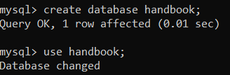
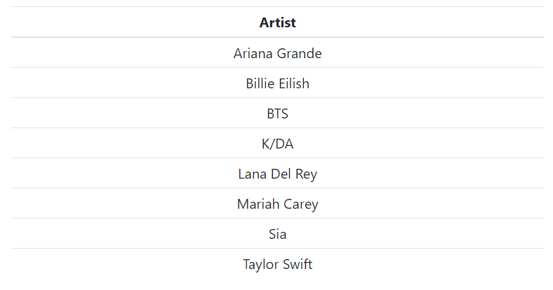
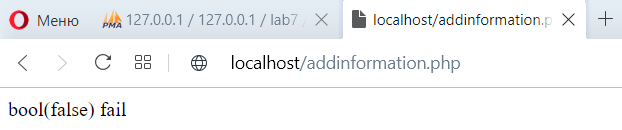

ЛАБОРАТОРНА РОБОТА №7
Тема: ВЗАЄМОДІЯ WEB-ЗАСТОСУВАНЬ З СИСТЕМОЮ КЕРУВАННЯ БАЗАМИ ДАНИХ (СКБД). ОБРОБКА РЕЗУЛЬТАТІВ SQL-ЗАПИТІВ У PHP-СЦЕНАРІЇ.
Мета: придбати практичні навички підключення до СКБД, вибора бази даних, виконання запиту, отримання результатів, відключення від СКБД
Створення інфологічної та даталогічної моделі
Завдання та номери варіантів, які ми робили:
Варіант №1 - Аня
Варіант №9 - Ангеліна, варіант №10 - Всеволод
Варіант №1
База даних створюється для зберігання номерів телефонів та співвіднесення їх до жителів певних квартир. Маємо три таблиці з номерами телефонів, прізвищ жителів та їхню адрессу. Зв'язками 1:M усі вони з'єднанні до таблиці "Проживаючі", яка містить у собі ID усіх інших таблиць як FK.
Інфологічна модель ПОбл:
Даталогічна модель ПОбл:
Варіант №9
База даних створюється для зберігання телепрограм та співвідношення їх до днів тижня. Маємо три таблиці: Таблиця в якій зберігаємо інформацію про дні тижня, таблицю в яій зберігаємо інформацію про телепрограми та таблицю зв'язку між ними. Зв'язок виду 1:N з'єднує таблиці сутностей (day, program) з таблицею зв'язку (connection), яка містить у собі ідентифікатори інших таблиць.
Інфологічна модель ПОбл:
Даталогічна модель ПОбл:
Варіант №10
База даних створюється для зберігання аудіотеки: переліку виконавців, альбомів та пісень. Таблиця виконавці з'єднана із альбомами зв'язком 1:N, альбоми з'єднані зв'язком 1:N. Усі таблиці знаходяться у третій нормальній формі.
Інфологічна модель ПОбл:
Даталогічна модель ПОбл:
Реалізація БД в СУБД MySQL
Створення БД та таблиць:
Варіант №1
Аня працювала із командною строкою mysql client та створила бд та таблиці прямо там.
Варіант №9
Ангеліна працювала у phpmyadmin та створила таблиці у цьому середовищі.
Варіант №10
Всеволод працював у MySQL Workbench та створив таблиці у цьому середовищі
Скрипти PHP:
Варіант №10
Зовнішній вигляд сторінки:
Варіант №9
Зовнішній вигляд сторінки:
Варіант №1

Висновки
У цій лабораторній роботі ми навчились встановлювати та працювати з реляційною СУБД MySQL, навчились створювати інфологічну та даталогічну модель, перетворювати іх у таблиці. Також ми навчились писати скрипти php та підключатись до бд.